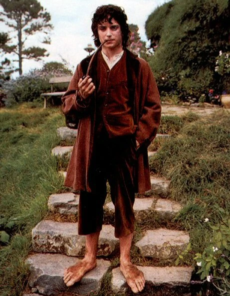
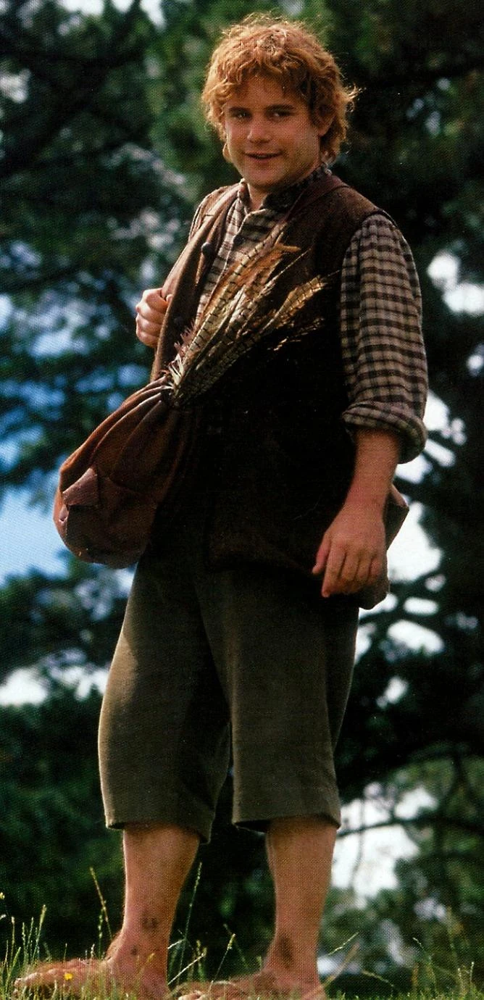
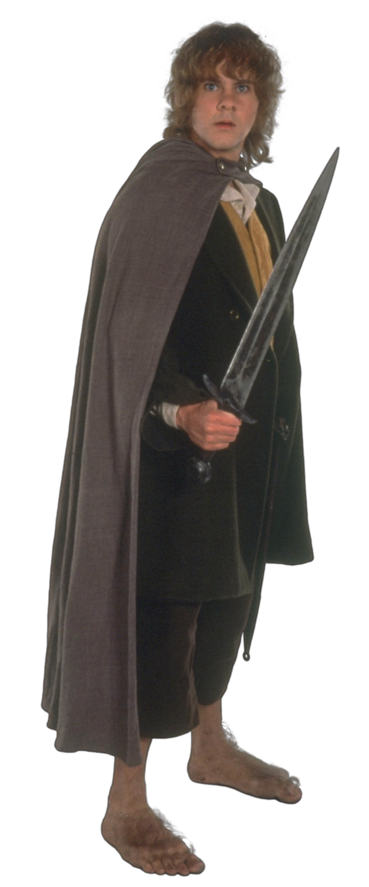
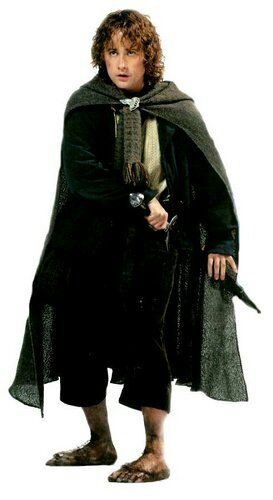
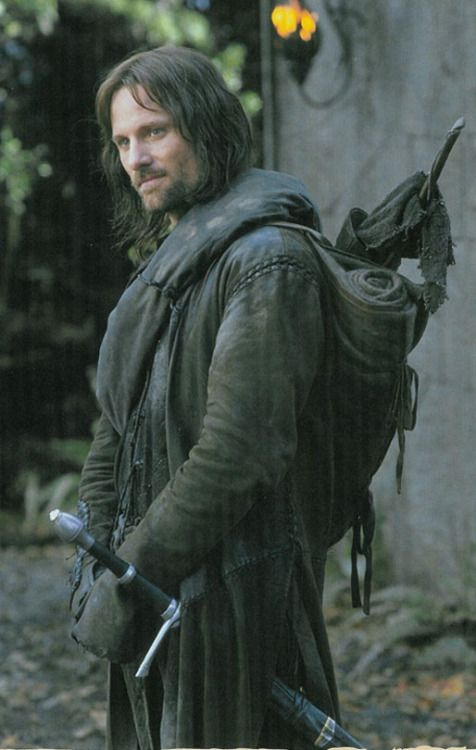
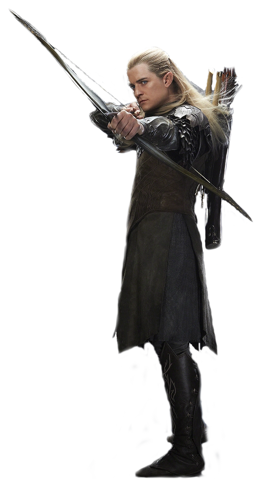

Hobbits
Los hobbits, habitantes de la apacible Comarca, son seres de estatura pequeña, de no más de cuatro pies de altura, con pies peludos y rostros risueños. Amantes de la buena comida y la tranquilidad, los hobbits son conocidos por sus festines y sus fiestas campestres. Son seres pacíficos, con un amor profundo por la vida sencilla y el hogar.
Frodo Bolsón
Frodo Bolsón es un hobbit de aspecto joven y apacible, con rizos oscuros que enmarcan un rostro amable y risueño. Su estatura es típica de los hobbits, siendo de aproximadamente cuatro pies de altura, y su constitución es delgada pero firme. Los ojos de Frodo, de un color entre verde y marrón, reflejan una mezcla de curiosidad, valentía y determinación, aunque a veces también muestran la carga de la responsabilidad que lleva sobre sus hombros. Viste de manera sencilla, con ropas cómodas y prácticas, adecuadas para la vida cotidiana en la apacible Comarca. Aunque su aspecto es modesto, Frodo irradia una cierta nobleza interior y una sabiduría que va más allá de sus años. Su personalidad es gentil y considerada, y su corazón rebosa de compasión y bondad hacia sus amigos y seres queridos. A medida que avanza en su viaje, Frodo demuestra un coraje extraordinario y una determinación inquebrantable frente a las adversidades. A pesar de los peligros que enfrenta, nunca pierde la esperanza ni la voluntad de seguir adelante en su misión de destruir el Anillo Único y salvar a la Tierra Media de la oscuridad. Frodo Bolsón es un héroe no solo por sus acciones valientes, sino también por su capacidad de resistir la tentación y mantenerse fiel a sus ideales y valores, incluso en los momentos más difíciles.
Samsagaz Gamyi
Samsagaz Gamyi, más conocido como Sam, es un hobbit de aspecto robusto y fornido, con una estatura similar a la de sus compañeros de la Comarca. Su complexión es más atlética que la de Frodo, con hombros anchos y manos fuertes que reflejan su habilidad para el trabajo físico. A pesar de su apariencia rústica, Sam tiene una expresión amable y unos ojos cálidos y leales que transmiten su naturaleza bondadosa y su devoción hacia aquellos a quienes ama. Su cabello rizado y castaño le cae en mechones desordenados sobre la frente, dándole un aire de vigor y determinación. Suele vestir de manera práctica, con ropas que le permiten moverse con libertad mientras trabaja en los jardines de la Comarca o viaja por la Tierra Media en su búsqueda para proteger a Frodo. La verdadera belleza de Sam radica en su corazón valiente y generoso. Es leal hasta la médula, dispuesto a sacrificarlo todo por el bienestar de sus amigos y seres queridos. A pesar de no ser un guerrero entrenado, Sam demuestra una valentía inquebrantable en los momentos de peligro, enfrentándose a criaturas terroríficas y desafíos imposibles con una determinación admirable. Además de su coraje, Sam es conocido por su ingenio y su ingeniosa habilidad para encontrar soluciones creativas a los problemas que enfrenta. Aunque a menudo duda de sí mismo, su valentía y su amor por Frodo lo impulsan a superar cualquier obstáculo en su camino hacia Mordor. En resumen, Samwise Gamgee es mucho más que un simple jardinero: es un héroe en toda regla, cuyo sacrificio y dedicación son fundamentales para el éxito de la misión de destruir el Anillo Único.
Meriadoc Brandigamo
Meriadoc Brandigamo, más conocido como Merry, es un hobbit de aspecto alegre y vivaz que destaca entre sus compañeros por su ingenio y su espíritu aventurero. Aunque su estatura es típica de los hobbits, su presencia es notable gracias a su actitud jovial y su capacidad para encontrar diversión en cada situación. Merry tiene cabello castaño, generalmente alborotado, que enmarca un rostro amistoso y expresivo. Sus ojos chispeantes reflejan su inteligencia aguda y su disposición alegre, y su sonrisa contagiosa ilumina cualquier habitación en la que se encuentre. Viste de manera práctica pero elegante, con ropas que reflejan su gusto por la moda y su sentido del estilo. A pesar de su naturaleza juguetona, Merry posee una sabiduría más profunda de lo que sugiere su apariencia. Es un observador perspicaz y un estratega astuto, capaz de pensar con rapidez y encontrar soluciones ingeniosas a los problemas que enfrenta. Su lealtad hacia sus amigos es inquebrantable, y está dispuesto a arriesgarlo todo por aquellos a quienes ama. A medida que avanza en su viaje, Merry demuestra un valor excepcional y una determinación férrea frente a los peligros que enfrenta. A pesar de su falta de experiencia en la lucha, se convierte en un guerrero valiente y hábil, dispuesto a enfrentarse a enemigos mucho más grandes y poderosos que él en defensa de su tierra y sus amigos. En resumen, Meriadoc Brandigamo es un personaje complejo y fascinante cuya alegría y espíritu aventurero lo convierten en un compañero indispensable en cualquier viaje. Su ingenio, su valentía y su lealtad son cualidades que lo convierten en un héroe inolvidable en la historia de la Tierra Media.
Peregrin Tuk
Peregrin Tuk, más conocido como Pippin, es el más joven y despreocupado de los hobbits compañeros de Frodo. De estatura similar a la de sus amigos, Pippin destaca por su actitud juguetona y su naturaleza curiosa, que a menudo lo lleva a meterse en problemas. Tiene cabello castaño claro, generalmente desordenado, que enmarca un rostro juvenil y expresivo. Sus ojos brillan con una mezcla de travesura y astucia, reflejando su espíritu inquieto y su deseo de aventura. A menudo lleva una sonrisa traviesa en los labios, que muestra su disposición alegre y su amor por la diversión. Pippin viste de manera similar a sus compañeros hobbits, con ropas cómodas y prácticas adecuadas para la vida en la Comarca. Aunque su aspecto es modesto, su personalidad despreocupada y su carisma natural lo convierten en el alma de cualquier fiesta o reunión. A pesar de su apariencia juvenil, Pippin demuestra un valor sorprendente en los momentos de peligro. A medida que avanza en su viaje, madura considerablemente, mostrando una determinación y una lealtad inquebrantables hacia sus amigos y hacia la causa que han emprendido juntos. En resumen, Peregrin Tuk es un personaje encantador y alegre cuya naturaleza juguetona y su disposición alegre lo convierten en un compañero indispensable en cualquier aventura. Aunque puede ser impulsivo y travieso a veces, su valentía y su lealtad lo convierten en un héroe inolvidable en la historia de la Tierra Media.
Humanos
Los humanos, también conocidos como Hombres en la Tierra Media, son una de las razas principales y más numerosas del mundo creado por J.R.R. Tolkien. Son diversos en apariencia y cultura, con varios reinos y pueblos que se extienden por toda la Tierra Media.
Aragorn
Aragorn, también conocido como Trancos, es un personaje de imponente presencia y nobleza innegable en "El Señor de los Anillos". De estatura alta y atlética, su figura se destaca entre sus compañeros, emanando una aura de autoridad y valentía. Su cabello oscuro, generalmente largo y algo desaliñado, enmarca un rostro marcado por el tiempo y la experiencia. Sus ojos, profundos y penetrantes, reflejan una sabiduría antigua y una determinación inquebrantable. A pesar de su aspecto austero, su expresión puede ser gentil y compasiva cuando se encuentra con aquellos que merecen su confianza y respeto. Aragorn viste con la elegancia y la sobriedad de un guerrero experimentado, con ropas resistentes y una capa oscura que ondea al viento. Porta una espada y un arco con maestría, herramientas de su oficio como guardián y protector de aquellos que luchan contra las sombras que amenazan la Tierra Media. Su linaje es noble, descendiente de los reyes de antaño, y su destino está ligado al trono de Gondor. A pesar de su origen noble, Aragorn ha renunciado a su título para servir como guardián del pueblo libre, protegiendo a los débiles y enfrentándose a los enemigos de la oscuridad con una valentía indomable. Aragorn es un líder nato, capaz de inspirar a otros con su ejemplo y su coraje. Su presencia infunde esperanza en aquellos que lo siguen, y su determinación inquebrantable lo convierte en un héroe legendario en la lucha por la libertad y la justicia en la Tierra Media.
Elfos
Los elfos son una raza noble y antigua en la Tierra Media, conocidos por su belleza, gracia y sabiduría. Son seres inmortales que habitan en reinos ocultos y bosques élficos, donde viven en armonía con la naturaleza y las criaturas del mundo.
Legolas
Legolas, el elfo arquero, es un personaje de una belleza extraordinaria y una destreza sin igual en el arte de la guerra y el manejo del arco y la flecha. De estatura alta y esbelta, su figura parece etérea y grácil, con movimientos fluidos que reflejan su naturaleza ágil y elegante. Su cabello rubio, largo y sedoso, cae en ondas suaves sobre sus hombros, complementando su tez pálida y sus rasgos delicados pero firmes. Sus ojos, del color de las hojas verdes bañadas por el sol, brillan con una luz interior que refleja su sabiduría milenaria y su conexión profunda con la naturaleza. Legolas viste con ropas ligeras y flexibles, ideales para el combate y la caza en los bosques élficos. Su atuendo está adornado con motivos inspirados en la flora y la fauna de su tierra natal, reflejando su amor por la belleza natural y su profundo respeto por el mundo que lo rodea. Como arquero consumado, Legolas porta un arco élfico de diseño elegante y una habilidad incomparable para disparar con precisión mortal. Sus flechas vuelan con la gracia de las aves, encontrando su objetivo con una precisión asombrosa incluso en las condiciones más difíciles. Aunque su apariencia pueda sugerir fragilidad, Legolas es un guerrero formidable, capaz de enfrentarse a los enemigos más temibles con una valentía inquebrantable y una destreza incomparable en el combate. Su lealtad hacia sus compañeros y su sentido del honor lo convierten en un aliado invaluable en la lucha contra las fuerzas del mal que amenazan a la Tierra Media.
Enanos
Los enanos son una raza resistente y orgullosa en la Tierra Media, conocidos por su destreza en la forja, su habilidad en la guerra y su amor por la riqueza y el trabajo duro. Son seres de estatura baja pero robusta, con cuerpos musculosos y extremidades cortas pero poderosas. Sus rostros suelen estar adornados con barbas largas y tupidas, que son una fuente de orgullo y distinción entre su pueblo.
Gimli
 Gimli, el enano de la Compañía del Anillo, es un personaje de
estatura compacta y robusta, con una presencia imponente que rivaliza con la de sus compañeros más
altos. Su figura está adornada con una barba espesa y trenzada, que cae en mechones enmarcando su rostro
curtido por la batalla.
Sus ojos son brillantes y alerta, reflejando su aguda inteligencia y su determinación indomable. Aunque
su estatura pueda ser menor que la de algunos de sus compañeros, su fortaleza física y su habilidad en
la lucha son legendarias entre su pueblo y más allá.
Gimli viste con ropas resistentes y prácticas, típicas de los enanos de las Montañas Nubladas. Su
atuendo está adornado con símbolos de su linaje y su orgullo enano, mostrando su conexión con la rica
historia y la tradición de su pueblo.
Como guerrero experto, Gimli porta un hacha de batalla con maestría, manejándola con una destreza
impresionante en el fragor de la batalla. Su coraje en el combate y su lealtad hacia sus compañeros son
legendarios, y está dispuesto a enfrentarse a cualquier peligro para proteger a sus amigos y cumplir con
su misión.
A pesar de su apariencia ruda y su naturaleza terca, Gimli posee un corazón noble y un sentido del honor
que rivaliza con el de cualquier héroe de la Tierra Media. Su humor áspero y su espíritu indomable lo
convierten en un compañero valioso y querido entre la Compañía del Anillo, y su valentía y determinación
lo convierten en un héroe inolvidable en la lucha contra las fuerzas del mal.
Gimli, el enano de la Compañía del Anillo, es un personaje de
estatura compacta y robusta, con una presencia imponente que rivaliza con la de sus compañeros más
altos. Su figura está adornada con una barba espesa y trenzada, que cae en mechones enmarcando su rostro
curtido por la batalla.
Sus ojos son brillantes y alerta, reflejando su aguda inteligencia y su determinación indomable. Aunque
su estatura pueda ser menor que la de algunos de sus compañeros, su fortaleza física y su habilidad en
la lucha son legendarias entre su pueblo y más allá.
Gimli viste con ropas resistentes y prácticas, típicas de los enanos de las Montañas Nubladas. Su
atuendo está adornado con símbolos de su linaje y su orgullo enano, mostrando su conexión con la rica
historia y la tradición de su pueblo.
Como guerrero experto, Gimli porta un hacha de batalla con maestría, manejándola con una destreza
impresionante en el fragor de la batalla. Su coraje en el combate y su lealtad hacia sus compañeros son
legendarios, y está dispuesto a enfrentarse a cualquier peligro para proteger a sus amigos y cumplir con
su misión.
A pesar de su apariencia ruda y su naturaleza terca, Gimli posee un corazón noble y un sentido del honor
que rivaliza con el de cualquier héroe de la Tierra Media. Su humor áspero y su espíritu indomable lo
convierten en un compañero valioso y querido entre la Compañía del Anillo, y su valentía y determinación
lo convierten en un héroe inolvidable en la lucha contra las fuerzas del mal.